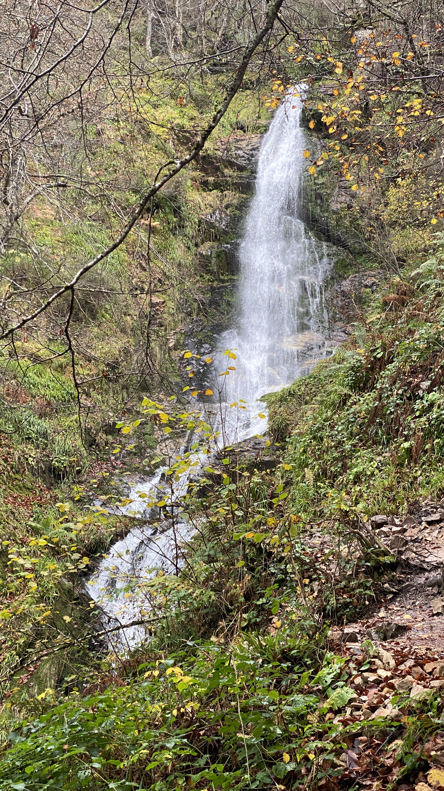
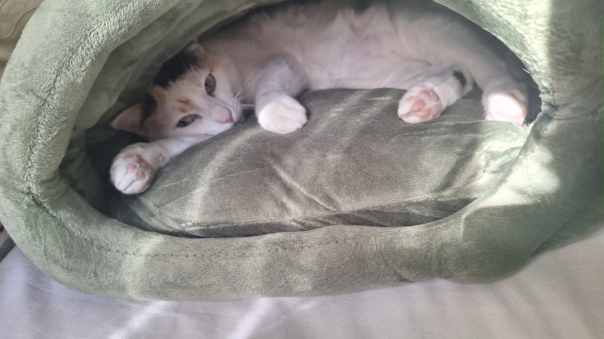

"Multi 21, Seb" — Vettel en Malasia 2013
Webber le pide a Vettel que no le adelante… y Vettel le adelanta igualmente. La cara de Mark lo dice todo.

Un poco de quién soy, qué me gusta y qué me motiva cada día.
| Nombre completo | Raúl Antuña |
|---|---|
| Ubicación | Asturias, España |
| Correo electrónico | rolitoansu@outlook.com |
| Empresa | Hiberus — AEM Backend Engineer |
| Formación | Máster en Ingeniería Web — Universidad de Oviedo |
| Idiomas | Español (nativo), Inglés (B2) |
Soy Raúl Antuña, nacido y criado en Asturias. Tras terminar el Grado en Ingeniería Informática en la Universidad de Oviedo (2022-2026), comencé en Hiberus como becario de AEM y desde julio de 2026 trabajo a jornada completa como AEM Backend Engineer.
Paralelamente curso el Máster en Ingeniería Web, donde profundizo en computación web avanzada.
Lo que hago cuando no estoy frente al ordenador (o cuando sí lo estoy, pero por gusto).
Me gusta el cine de acción.
Escucho música pop, trap entre otros géneros.
Sigo al Sporting de Gijón, para lo bueno y para lo malo.
Me gusta pasar tiempo con mis amigos y descansar.
Algunos momentos y lugares que me definen.


Además del desarrollo web y la ingeniería de software, sigo cada carrera de Fórmula 1: me apasiona la convergencia entre tecnología punta, telemetría en tiempo real y competición al límite.
Algunos de los mejores mensajes de radio que ha dejado la Fórmula 1.
Webber le pide a Vettel que no le adelante… y Vettel le adelanta igualmente. La cara de Mark lo dice todo.
Toto Wolff desatando a Hamilton en Hungría con la frase más épica de la radio moderna. Puro fuego.
Grosjean desesperado con su alerón delantero. Un clásico de la radio que no pasa de moda.